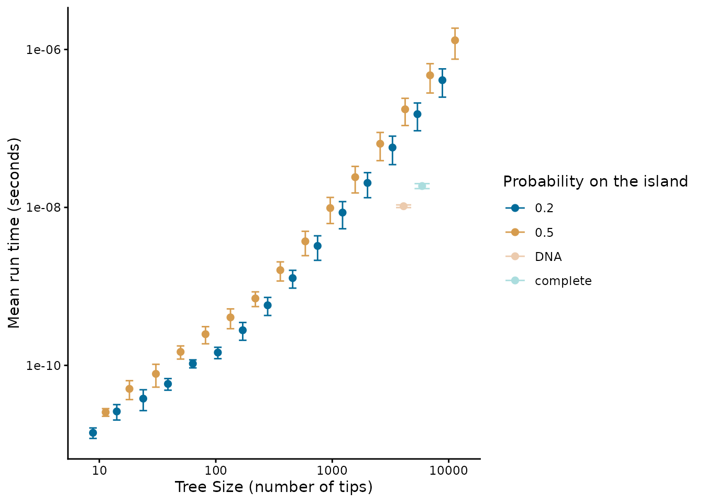
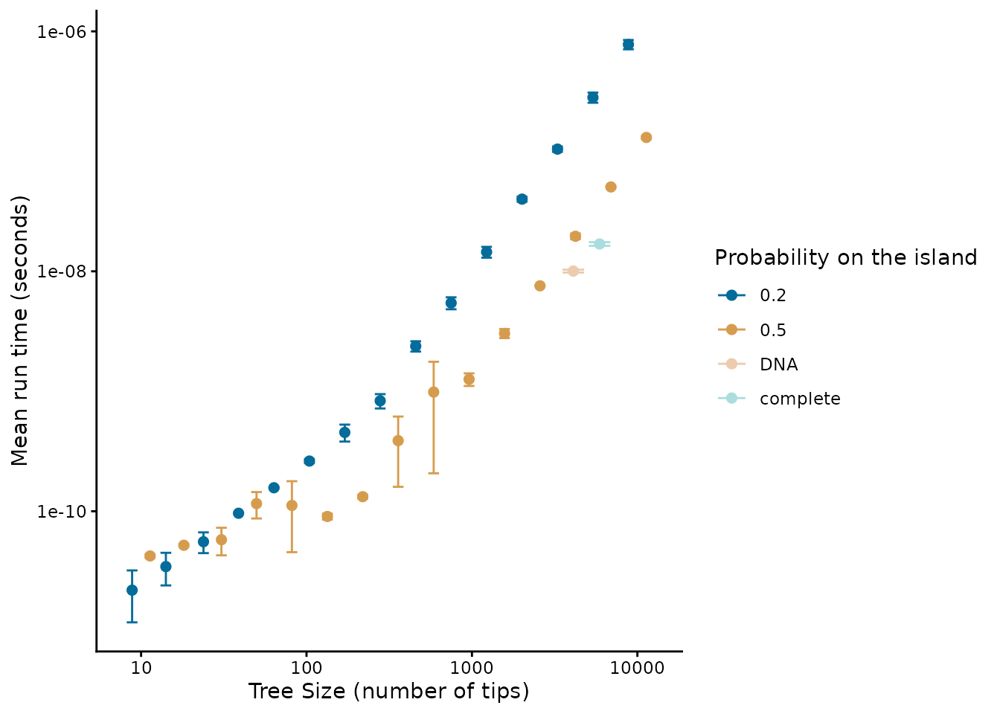
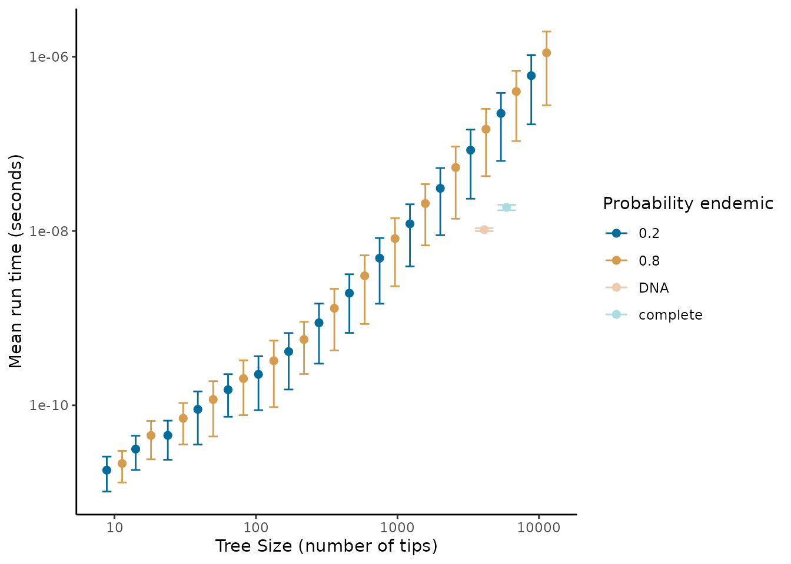

Performance analysis of DAISIEprep::extract_island_species()
In this article we test and analyse the performance, in terms of time
consumption/complexity of the main function in the
DAISIEprep R package:
extract_island_species(). This function takes in a
phylogenetic tree and species endemicity data in the form of a
phylo4d object (an S4 class from the R package
phylobase).
This is not a thorough examination of all possible uses of the
extract_island_species() function, but rather gives an
indication of the usability of the function for data sets of different
sizes, as well as detecting any features of the data that may slow the
process of extracting and formatting the island community data.
All of the work for the performance analysis is carried out by the
benchmark() function from the DAISIEprep
package. But before calling this function we explain how the
benchmarking is set up.
The first argument of benchmark() is
phylod. If this is NULL then the function will
simulate the phylogenies and the endemicity data given the:
tree_size_range, num_points,
prob_on_island, and prob_endemic arguments.
These specify the lower and upper range of the tree size to simulate
(the sequence breaks can be in linear or log space depending on the
argument log_scale), the number of breaks in the sequence
between lower and upper tree sizes, the probability that a species will
be on the island, and if a species is on the island whether it is
endemic (1 - prob_endemic is the probability a species on
the island is non-endemic). If a phylo4d object is supplied
to the phylod argument in benchmark() then
this tree will be used to perform the benchmarking.
In the case of simulating data the parameter space of the performance
analysis is then the combination of these variables (using the
expand.grid() function). The phylogeny is simulated to a
fixed size using the rphylo() function from the
ape package.
As we are stochastically simulating the endemicity statuses of the species in the tree it may be that there is not an outgroup species not on the island in order to correctly extract the colonisation times from the stem age of the species or clade on the island. Therefore, we add an outgroup which we ensure is not present on the island.
When we want to test the performance of the
extract_island_species() function using the
asr algorithm we need to first run an ancestral state
reconstruction. This can easily be achieved if the phylod
data with the phylogeny and endemicity statuses at each tip of the tree
are ready (see tutorial vignette for more information on the
asr algorithm).
To quantify the time elapsed while the function runs there are
several methods in both base R and in various R packages
(e.g. microbenchmark or rbenchmark). However
here we use system.time() from base R (see https://radfordneal.wordpress.com/2014/02/02/inaccurate-results-from-microbenchmark/)
for reasoning).
Side note: by default DAISIEprep::benchmark() conditions
on each simulated data set having a non-empty island, and thus the
function is not tested for the trivial case that no species need to be
extracted.
Due to the computational time not being deterministic and to ensure
the results are not spurious we replicate timing three times and the
mean “real time elapsed” is calculated, as well as replicating the
simulation (given by argument replicates) to account for
stochasticity in the simulation of the data.
The range of tree sizes we use encompasses those of common empirical phylogenies (10 tips to 10,000 tips). We then generate a random sample of tip states for each species, with the possible states being: endemic to the island, non-endemic and not present on the island. We tested a low probability of each species in the tree being on the island (\(P(0.2)\)) and a high probability of species being on the island (\(P(0.5)\)). For each of these scenarios we tested a low (\(P_E(0.2)\), \(P_{NE}(0.8)\)) and high probability (\(P_E(0.8)\), \(P_{NE}(0.2)\)) of island species being endemic to test whether this affects performance. For each scenario we ran ten replicates. For isolated islands where cladogenesis is high, island species will likely not be spread across uniformly across the phylogeny as we assumed in our simulations, but instead will be clustered. To check for scenarios where the number of species per colonisation events is high (i.e. radiations on the island) we used the mammals of Madagascar data set. For this we used the (Upham et al. 2019) complete and DNA-only phylogenies, and the island endemicity data of Madagascar (Michielsen et al. 2023).
The results presented in this vignette are not computed each time the
vignette is rendered due to the large computation time required.
Instead, the analyses are run on a cluster computer and saved in the
package. The analysis script run to produce the results can be found in
the DAISIEprepExtra
package here.
The performance analysis uses the benchmark() function in
the DAISIEprep package.
The output produces results for the DNA-only phylogeny and the complete phylogeny. The raw data of parameter estimates for the different parameter settings is tidied into a tibble containing the data we need for both the DNA and complete phylogeny.
performance_data <- DAISIEprep:::read_performance()We can plot the time consumption of each simulated and empirical
(DNA-only and complete phylogeny) data set and group the results by the
probability of species being on the island
(prob_on_island). Now the results can be plotted with
plot_performance implemented in DAISIEprep.
This function follows the tidyverse convention of giving variable names
as variables (as opposed to strings) and uses tidy evaluation to group
by the variable given, either prob_on_island or
prob_endemic. First for the min algorithm:
DAISIEprep::plot_performance(
performance_data = performance_data$performance_data_min,
group_by = prob_on_island
)
#> Warning: `position_dodge()` requires non-overlapping x intervals
#> `position_dodge()` requires non-overlapping x intervals
And secondly for the asr algorithm:
DAISIEprep::plot_performance(
performance_data = performance_data$performance_data_asr,
group_by = prob_on_island
)
#> Warning: `position_dodge()` requires non-overlapping x intervals
#> `position_dodge()` requires non-overlapping x intervals
Alternatively, the data can be grouped by the probability that
species on the island are endemic (prob_endemic) for the
min (first) and asr (second) algorithms:
plot_performance(
performance_data = performance_data$performance_data_min,
group_by = prob_endemic
)
#> Warning: `position_dodge()` requires non-overlapping x intervals
#> `position_dodge()` requires non-overlapping x intervals
plot_performance(
performance_data = performance_data$performance_data_min,
group_by = prob_endemic
)
#> Warning: `position_dodge()` requires non-overlapping x intervals
#> `position_dodge()` requires non-overlapping x intervals
We find that even for large trees (10,000 tips) the scale of extraction less than seconds, whereas running the DAISIE inference model is on the scale of minutes to days, and thus pre-processing does not present a bottleneck to the pipeline. The empirical trees we ran (the Madagascar mammal example) were quicker to process than trees simulated with uniformly random island presence (figure 1). This suggests that when the ratio of species to colonisation events on the island is higher it should be faster to extract. However, even for large trees with many colonisations extraction should pose a computational problem. The speed of extraction facilitates extraction of island data across many phylogenies, for example extracting island community data across the posterior distribution of inferred phylogenetic trees to account for uncertainty in branching times and tree topology.
Given the approximately linear relationship between the size of the phylogeny and time required for extraction in the above log-log plots we fit a power law to the mean run time (mean across the replicates).
grouped_performance_data <- dplyr::group_by(
performance_data$performance_data_min,
tree_size,
"prob_on_island"
)
mean_performance_data <- dplyr::summarise(
grouped_performance_data,
mean = mean(median_time),
.groups = "drop"
)
fit_min <- lm(log(mean_performance_data$mean) ~ log(mean_performance_data$tree_size))
fit_min$coefficients
#> (Intercept) log(mean_performance_data$tree_size)
#> -28.297771 1.399895
grouped_performance_data <- dplyr::group_by(
performance_data$performance_data_asr,
tree_size,
"prob_on_island"
)
mean_performance_data <- dplyr::summarise(
grouped_performance_data,
mean = mean(median_time),
.groups = "drop"
)
fit_asr <- lm(log(mean_performance_data$mean) ~ log(mean_performance_data$tree_size))
fit_asr$coefficients
#> (Intercept) log(mean_performance_data$tree_size)
#> -28.0177 1.3008The growth in time for both the min and asr
algorithms follows a power function (\(y=ax^k\)) with exponents \(k =\) 1.3998949 and \(k =\) 1.3008005, respectively, when fitted
on mean run time against tree size. Therefore the time complexity scales
relatively well with tree size, and thus unless needing to be applied to
extremely large phylogenies (>10,000 tips) the
DAISIEprep extraction functionality should be
applicable.